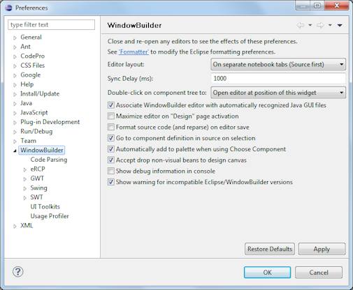
Here is the list of core preference pages:
Preferences maybe exported and imported using the Eclipse Preference Export/Import facility.
General Comments
The positions of the Palette and Structure View may be configured via drag and drop or by right-clicking on the header and selecting the Dock On command. The Palette may be docked to either the left or right side of the Design View.
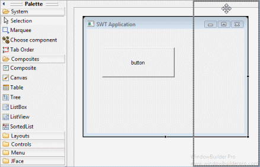 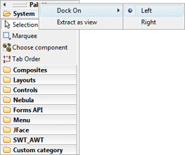
The Structure View may be docked to the top, bottom, left or right of the Design View.
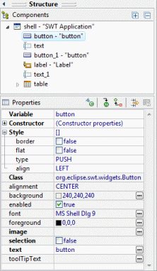 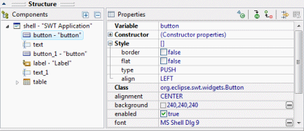 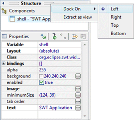
The Palette and Structure View are also available as standalone views. Use the Window > Show View > Other… command and open the WindowBuilder category or right-click on the header and select the Extract as view command. Closing the view will make it reappear as embedded view within the editor.
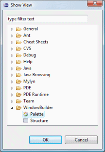 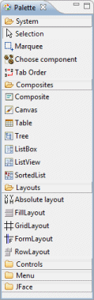 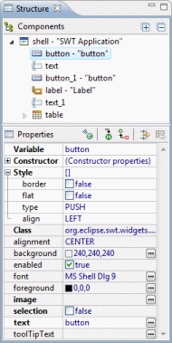 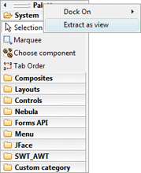 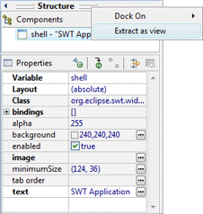
Editor Layout
This preference controls the position of the Source View relative to the Design View. By default, they are "on separate notebook tabs" labeled Source and Design (you can select which page is first). Additional options are provided to show the Source View and Design View side by side or one above the other.
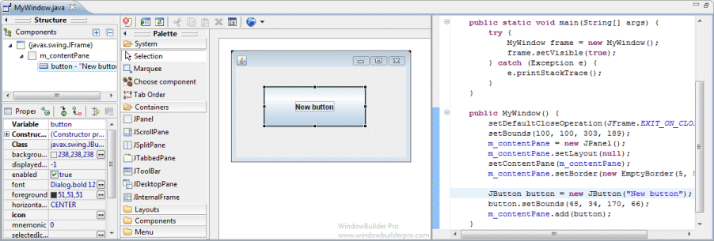
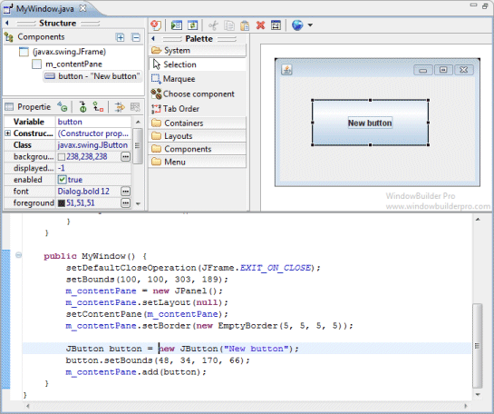 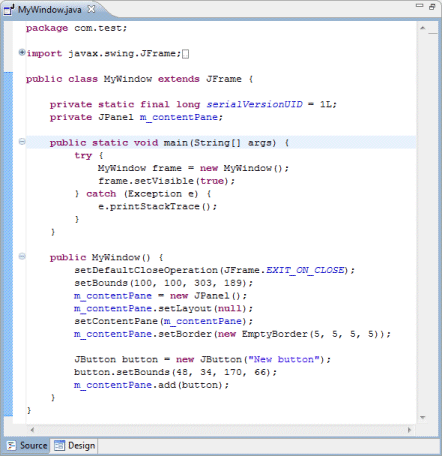
Sync Delay (ms)
When the Source View and Design View are both visible, this preference determines the delay used to synchronize the two panes. If the user types in the Source View, the source will be re-parsed and the Design View will be updated after a period specified by the sync delay. Use "-1" to synchronize only on save.
Associate WindowBuilder editor with automatically recognized Java GUI files
This preference determines whether WindowBuilder Pro will attempt to automatically recognize GUI files and associate the WindowBuilder editor with them.
Maximize editor on "Design" page activation
This preference determines whether the WindowBuilder editor will be automatically maximized when switching to the Design View.
Format source code (and reparse) on editor save
This preference determines whether the generated source code will be formatted using your Eclipse code formatting preferences whenever the WindowBuilder editor is saved.
Go to component definition in source on selection
This preference controls whether the source definition of a component is highlighted any time a component is selected in the Design View.
Automatically add to palette when using Choose Component
This preference controls the whether beans selected using the Choose Component command are automatically added to the Custom Controls palette.
Accept drop non-visual beans to design canvas
This preference controls whether non-visual beans may be dropped on the design canvas.
Show debug information on console
This preference controls whether debugging info is written to the Java console window.
Show warning for incompatible Eclipse/WindowBuilder versions
This preference controls whether the tool shows a version warning when there is a mismatch between the version of the tool you are using and the version of Eclipse you are using. In general, a version of the tool built for Eclipse 3.4 will not work with Eclipse 3.7 and vice versa. In some situations, a newer milestone or integration build will work with the latest build, so this preference gives you the ability to suppress the unnecessary and distracting warning in those cases. Be warned, however, that using the tool in a mismatched Eclipse version may result in unpredictable behavior.